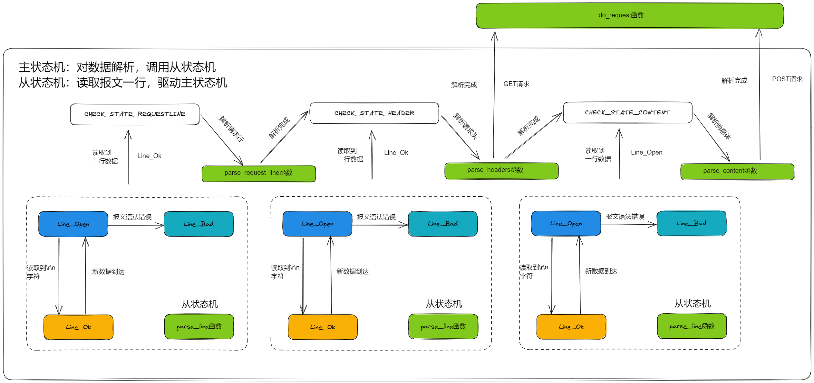

有限状态机一种逻辑单元内部的一种高效编程方法，在服务器编程中，服务器可以根据不同状态或者消息类型进行相应的处理逻辑，使得程序逻辑清晰易懂。

三种状态，标识解析位置。
enum CHECK_STATE
{
CHECK_STATE_REQUESTLINE = 0, //检查请求行
CHECK_STATE_HEAD, //检查请求头
CHECK_STATE_CONTENT //检查请求体
};
三种状态，标识解析一行的读取状态。
enum LINE_STATE
{
LINE_OK = 0, //行解析成功
LINE_BAD, //语法错误
LINE_OPEN //未获取到一行
};
在一个循环内调用epoll_wait接收连接，然后分析得到的发生事件的fd
DealClientData()
DealWithSignal()
SIGALARM和SIGTERM信号，如果是SIGALARM，则设置timeout_ = trueDealWithRead()
DealWithWrite()
timer_flag判断
TimerHandle()，再在里面调用tick()函数检查到期的定时器，关闭连接if (events_[i].events & (EPOLLRDHUP | EPOLLHUP | EPOLLERR))
EINTR错误的产生：当阻塞于某个慢系统调用的一个进程捕获某个信号且相应信号处理函数返回时，该系统调用可能返回一个EINTR错误。
例如：在socket服务器端，设置了信号捕获机制，有子进程，当在父进程阻塞于慢系统调用时由父进程捕获到了一个有效信号时，内核会致使accept返回一个EINTR错误(被中断的系统调用)。
如果你连续做read操作而没有数据可读。此时程序不会阻塞起来等待数据准备就绪返回，read函数会返回一个错误EAGAIN / EWOULDBLOCK，应该break。这里应该是数据读完了。
在HTTP报文中，每一行的数据由\r\n作为结束字符，空行则是仅仅是字符\r\n，通过查找\r\n，改为\0行结束，读取每一行。
从状态机从m_read_buf中逐字节读取，判断当前字节是否为\r
当前字节不是\r，判断是否是\n（一般是上次读取到\r就到了buffer末尾，没有接收完整，再次接收时会出现这种情况）
表示接收不完整，需要继续接收，返回LINE_OPEN
每次读取一行后，更新start_line为m_check_idx的位置，作为下一行的开始
char* strpbrk( const char* dest, const char* breakset );
- 读取在breakset中字符，在dest中第一次出现的位置。
strcmp( const char *lhs, const char *rhs );
- 用于比较两个字符串并根据比较结果返回整数。 基本形式为strcmp(str1,str2)，若str1=str2，则返回零；若str1<str2，则返回负数；若str1>str2，则返回正数。
int strcasecmp (const char *s1, const char *s2)
- 函数说明strcasecmp()用来比较参数s1和s2字符串，比较时会自动忽略大小写的差异。
- 返回值 若参数s1和s2字符串相等则返回0。 s1大于s2则返回大于0 的值，s1 小于s2 则返回小于0的值。
strncasecmp(const char *s1, const char *s2, size_t n)
- strncasecmp()用来比较参数s1 和s2 字符串前n个字符，比较时会自动忽略大小写的差异。
- 若参数s1 和s2 字符串相同则返回0。s1 若大于s2 则返回大于0 的值，s1 若小于s2 则返回小于0 的值。
strchr(const char *str, int c)
- strchr函数功能为在一个串中查找给定字符的第一个匹配之处。
strspn(const char *str1, const char *str2)
- 该函数返回 str1 中第一个不在字符串 str2 中出现的字符下标。
GET /index.html HTTP/1.1\r\nstrpbrk找到非空位置，即划分了method，再用strcasecmp区分是GET还是POST/index.html HTTP/1.1strpbrk找到非空位置，即划分了version = HTTP/1.1Host: 192.168.142.27:5520\r\n
Connection: keep-alive\r\n
Upgrade-Insecure-Requests: 1\r\n
User-Agent: Mozilla/5.0 (Windows NT 10.0; Win64; x64) AppleWebKit/537.36 (KHTML, like Gecko) Chrome/110.0.0.0 Safari/537.36\r\n Accept:text/html,application/xhtml+xml,application/xml;q=0.9,image/avif,image/webp,image/apng,*/*;q=0.8,application/signed-exchange;v=b3;q=0.7\r\n
Accept-Encoding: gzip, deflate\r\n
Accept-Language: zh-CN,zh;q=0.9\r\n
主要用于注册登录，账户和密码放在POST请求消息体内。
处理完返回资源获取请求
在处理完请求头，没用消息体内容时对需要访问的资源做出响应，或者是处理完消息体内容后对需要做出相应的部分做出响应。
写响应报文到写缓冲区当中。
分别添加对应的相应的状态信息，使用的HTTP协议，消息体的长度和长短连接的判断。
这里用来iov的数组信息。
上面都完成了，要进行写事件，往connfd中写入响应报文。